// A ransomware collective got sloppy. Time to turn the hunters into the hunted.
A careless ransomware collective got sloppy. It was our turn to expose their OPSEC failures through forensics, exploitation, and decoding — and turn the hunters into the hunted.
Flare, SANS, and WiCyS built this CTF for anyone with the Tor browser and an hour to level up. It is beginner friendly, fully browser based, and no paid tools or prior CTF experience are required.
I had never used the Tor browser before — only heard stories from Dark Web Diary channels and SomeOrdinaryGamers. After this challenge, I came out curious to learn the ins and outs of how to safely and securely use it.
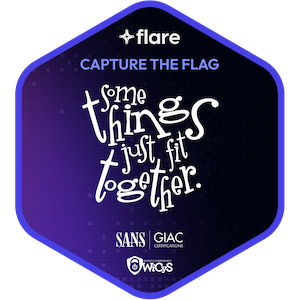
Once the flag is found for this challenge, it is technically a coupon code for the merch.flare.io store. The flag format was unknown going in — figuring that out was part of the challenge.
The challenge is 100% browser based. No command prompt, no Python tools — just the Tor Browser, CyberChef, and critical thinking. To prepare, I had to crack open my x86 microcomputer to install the Tor browser.
I highly recommend that, if you do not know how to use Tor, you go to the Tor Project's Getting Started guide and read the Getting Started section before proceeding.
I am a firm believer in reading documentation before installing or using any tools you are unfamiliar with. I also highly recommend using a virtual machine for any CTF — it is best practice not to install tools natively on your primary machine unless you are using a dedicated throwaway device or fully accept the associated risks.
On the day the challenge became available, participants were emailed a .onion link — the only information the CTF creators provided. That's it. Fire up Tor, navigate to the link, and figure it out.
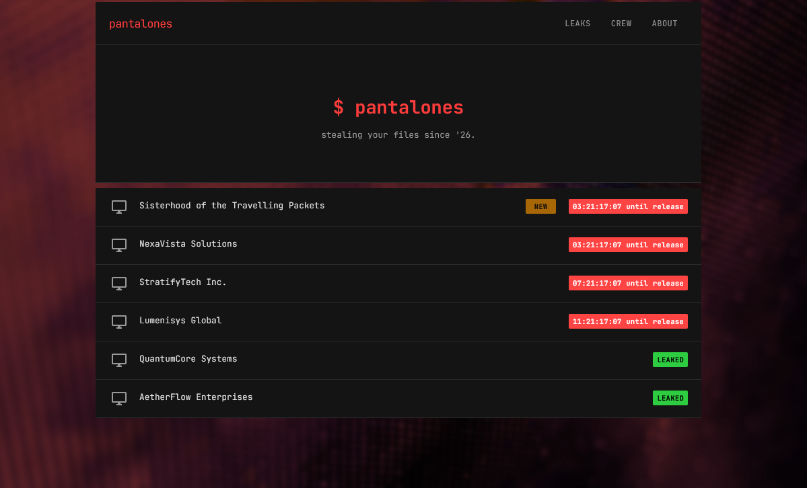
Onion link supplied by Flare | Click to enlarge
At first glance, we can see there are 2 challenges in leaked status, with 4 others behind a countdown timer. Like exploring any website, reconnaissance starts by navigating every clickable link available. For something as small as this, you can get the lay of the land quickly just by opening up the hood — no need for tools like gobuster.
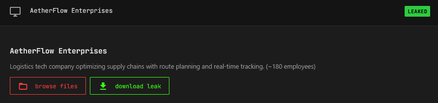
AetherFlow Enterprises | Click to enlarge
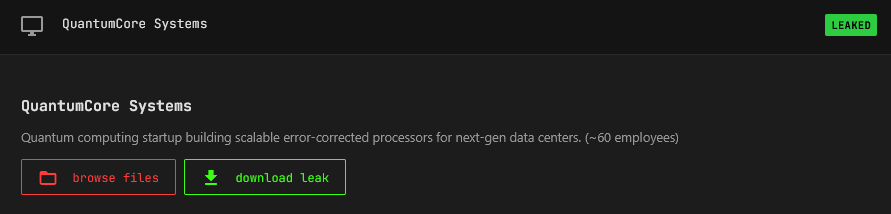
QuantumCore Systems | Click to enlarge
We come across 2 repos where we can either browse files or download leaks. Rather than downloading immediately, browsing files first gives us more context — you never know what you'll find just by looking around.
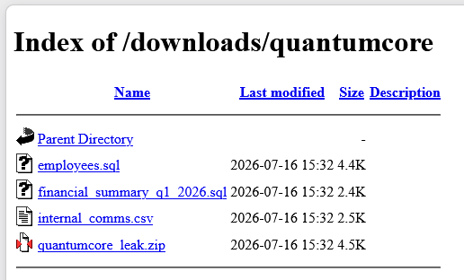
Browse Files — QuantumCore Systems | Click to enlarge
The collective left directory access wide open. This is a known pentest finding — directory listing exposes files that were never meant to be publicly accessible. Old config files, backup files, logs, hidden directories — all out in the open. Lazy OPSEC.
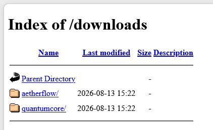
Files exposed in open directories | Click to enlarge
We download these files to review later and continue navigating the available links.
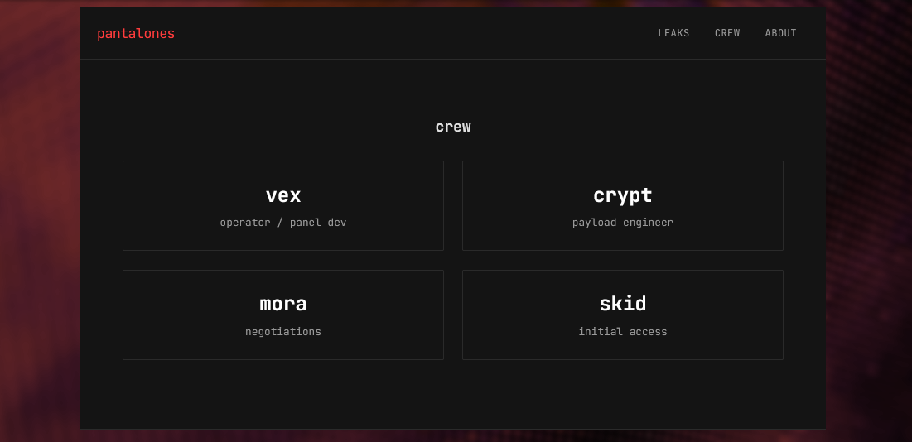
The Crew page — potential usernames identified | Click to enlarge
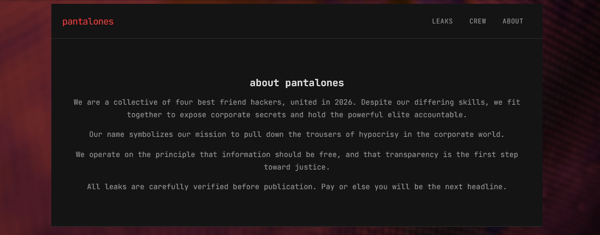
The About page — biography found | Click to enlarge
Whenever you perform reconnaissance on a website, always check /robots.txt. This file sits in the root directory and tells bots and web crawlers what paths are allowed or disallowed — making it a perfect place to discover endpoints not indexed in search engines. Learn more here.
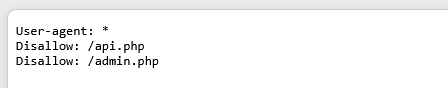
/robots.txt — 2 disallowed endpoints found | Click to enlarge
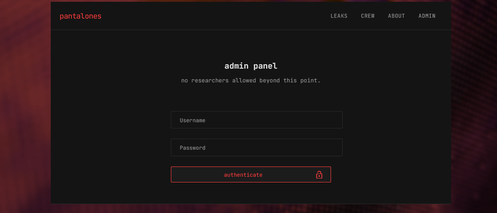
/admin.php — login screen after access warning | Click to enlarge
We were presented with a WARNING: This area is for authorized users only message. After clicking OK, a login screen appeared. Remember the /crew page? Those names — vex, crypt, mora, skid — are potential usernames. Standard CTF practice is to try them with the password Password. None worked, but the site confirmed the crew names are valid usernames — useful intel.
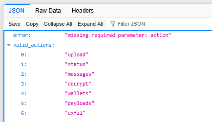
/api.php — a very telling error message | Click to enlarge
The error message "Missing required parameter: action" is a huge clue. It tells us exactly what parameter we need and hands us a list of valid_actions. If you are not familiar with how URL parameters work, these resources are worth reading before going further:
Armed with the list of valid actions, we test each endpoint:
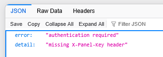
/api.php?action=upload | Click to enlarge
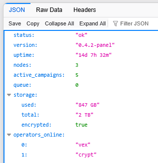
/api.php?action=status | Click to enlarge
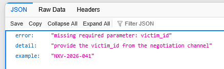
/api.php?action=decrypt | Click to enlarge
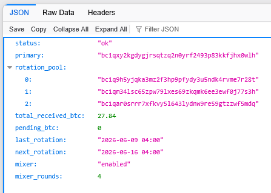
/api.php?action=wallets | Click to enlarge
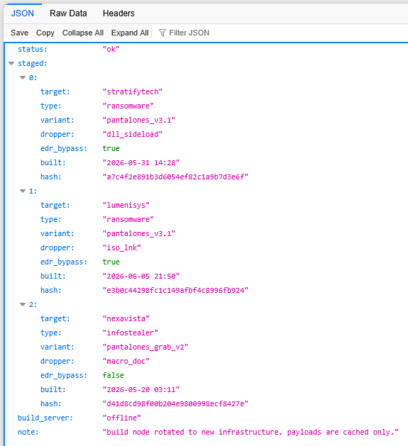
/api.php?action=payloads | Click to enlarge
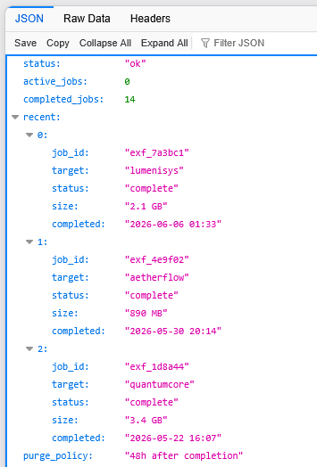
/api.php?action=exfil | Click to enlarge
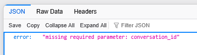
/api.php?action=messages — saved for last | Click to enlarge
The messages action reveals an additional parameter of interest: conversation_id. We start enumeration at conversation_id=1 — everything starts at 1. If not, we try 01, 001, 0001, and so on.
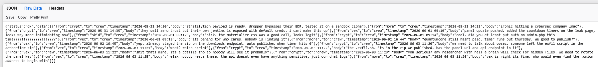
/api.php?action=messages&conversation_id=1 (RAW format shown) | Click to enlarge
After reading conversation_id=1, we enumerate to conversation_id=2.
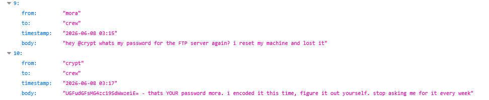
/api.php?action=messages&conversation_id=2 — Base64 string discovered | Click to enlarge
A Base64 string. Using CyberChef to decode it gives us a password we can use to log into the admin panel with one of the identified crew usernames.
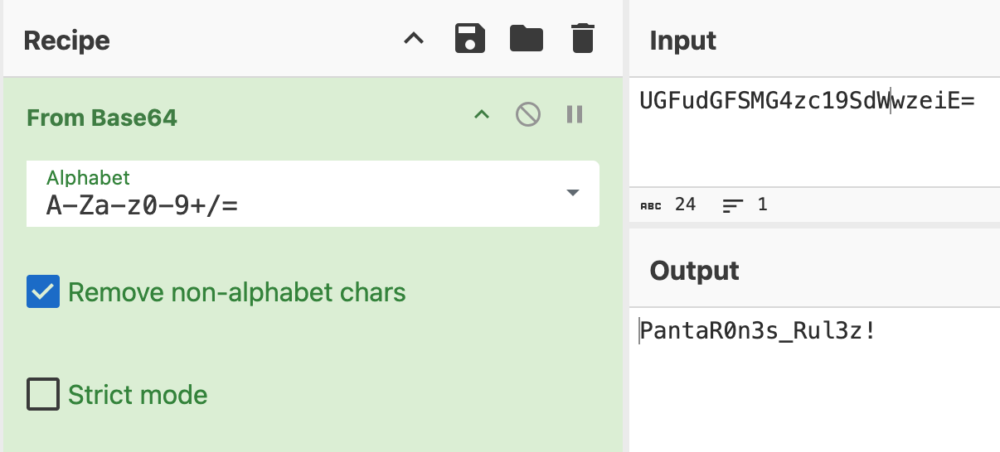
CyberChef — Base64 decoded | Click to enlarge
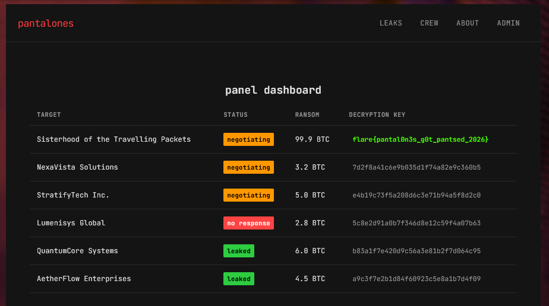
Flag found — right there in rainbow colors as a decryption key | Click to enlarge
And there it was — right there in the dashboard, the flag as one of the decryption keys. The dashboard also revealed Activity Log and Infrastructure widgets. The flag worked as a coupon code on merch.flare.io to redeem The Sisterhood of the Traveling Packets T-Shirt.
Below is a breakdown of the downloaded files from the challenge. None were directly required to solve it, but they helped set the stage of the website and provided useful context.
Api_keys_internal.yamlCustomers.sqlroute_algorithms_PROPRIETARY.sqlAlso found in the AetherFlow directory: exfil.sh — a file containing Python code showing how data was uploaded to the site. This was a direct hint toward the /api.php?action=upload endpoint.
Employees.sqlFinancial_summary_q1_2026.sqlInternal_comms.csv — Notable: contains a tip that a breach may have already occurred.conversation_id without access control is a textbook IDOR finding.| TECHNIQUE | DESCRIPTION |
|
T1595 — Active Scanning T1190 — Exploit Public-Facing Application |
While no active scanning tools were used, we force browsed the website — revealing hidden endpoints and URI paths susceptible to IDOR. |
| T1552.008 — Unsecured Credentials: Chat Messages | A Base64 encoded string contained a plaintext password stored in an unsecured chat log — exposed through the unauthenticated messages API endpoint. |
{kind=link}
{kind=link}
{kind=link}
{kind=link}
{kind=link}
{kind=link}
{kind=link}
{kind=link}
{kind=link}
{kind=link}
{kind=link}
{kind=link}
{kind=link}
{kind=link}
{kind=link}
{kind=link}
{kind=link}
{kind=link}
{kind=link}
{kind=link}
{kind=link}